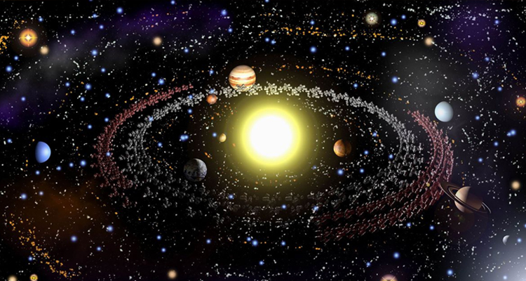
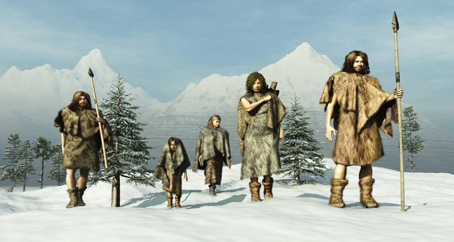

13.7 миллиардов лет назад
Большой взрыв. Создание вселенной.
13.4 миллиардов лет назад
Рождение первых звезд
4.8 миллиардов лет назад
Образование галактики

4.6 миллиардов лет назад
Образование солнечной системы
4.5 миллиардов лет назад
Образование Земли
4.4 миллиардов лет назад
Появление океанов
3.8 миллиардов лет назад
Зарождение жизни - появление бактерий

3.4 миллиардов лет назад
Появление континентов

2.5 миллиардов лет назад
Появление кислорода
550 миллионов лет назад
Первые растения

400 миллионов лет назад
Живые организмы выходя на сушу
250 миллионов лет назад
Вулканический вызрыв. Появление динозавров
65 миллионов лет назад
Падение метеорита. Вымирание динозавров
55 миллионов лет назад
Появление первых приматов
2 миллиона лет назад
Начало каменного века
800 тысяч лет назад
Освоение огня
200 тысяч лет назад
Человек осваивает речь
100 тысяч лет назад
Расселение людей по континентам
50 тысяч лет назад
Начало ледникового периода
12 тысяч лет назад
Окончание расселения людей по планете
10 тысяч лет назад
Окончание ледникового периода
6 тысяч лет назад